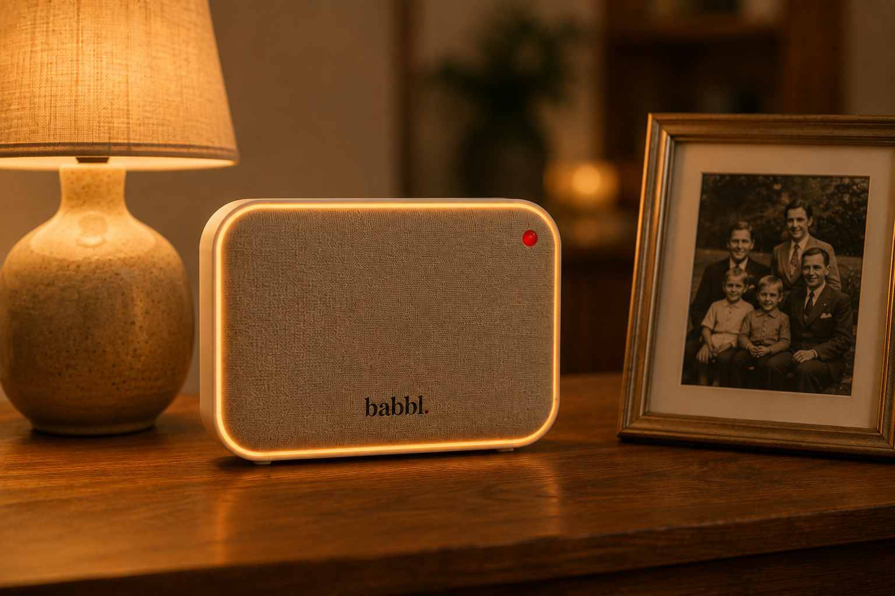

Hoe het werkt
Eenvoudig, vertrouwd en menselijk
Babbl is gemaakt om gewoon te gebruiken. Geen technische kennis nodig — alleen praten en geholpen worden.
Kom op de wachtlijst
Babbl is gemaakt om gewoon te gebruiken. Geen technische kennis nodig — alleen praten en geholpen worden.
Kom op de wachtlijst
Zo eenvoudig werkt het.
U stelt gewoon uw vraag hardop, zoals u dat aan een vertrouwd persoon zou doen. Geen knoppen, geen ingewikkelde menu's. Babbl luistert en begrijpt wat u nodig heeft.
U krijgt meteen een duidelijk antwoord of hulp. Of het nu gaat om een herinnering, uitleg bij een brief, een vraag over medicatie of gewoon een gesprek — Babbl staat klaar.
Babbl onthoudt wat voor u belangrijk is. Medicijnen op tijd innemen, een afspraak bij de dokter, de verjaardag van een kleinkind — Babbl herinnert u eraan op het juiste moment.
Wanneer dat gewenst is, kan Babbl uw familie op de hoogte houden of helpen contact te leggen. U bepaalt altijd zelf wat gedeeld wordt en met wie.
In de toekomst kunnen vertrouwde organisaties zoals uw huisarts, apotheek of gemeente via Babbl extra ondersteuning aanbieden. Altijd met uw toestemming.
Alles wat u normaal ook aan een behulpzame kennis zou vragen.
"Herinner me morgen aan mijn bloeddrukpillen." Of: "Ik heb vrijdag een afspraak bij de cardioloog."
"Ik heb een brief van het CAK gekregen, kun je uitleggen wat er staat?" Maak een foto — Babbl leest mee en stuurt hem door naar familie als u dat wilt.
"Mag ik dit medicijn op een lege maag innemen?" Of: "Wanneer moet ik de bloeddruk opnemen?"
"Laat mijn dochter weten dat ik haar wil spreken." Of: "Stuur een berichtje naar Martijn."
"Wat is het weer vandaag?" Of: "Wanneer gaat de vuilniswagen langs?"
"Ik verveel me een beetje vandaag." Babbl is er ook gewoon voor een goed gesprek.
Babbl helpt u nep van echt te onderscheiden. Twijfelt u over een telefoontje, brief of e-mail? Vraag het gewoon.
Babbl is een compact apparaatje dat gewoon in uw woonkamer staat. Niet op een scherm, niet aan een muur — gewoon op tafel, naast een lamp of een boek.
Het apparaat is warm van uitstraling en past in ieder interieur. U hoeft niets in te stellen of te leren. U praat gewoon, en Babbl luistert.

Schrijf u in voor de wachtlijst en ontvang updates over de lancering van Babbl.